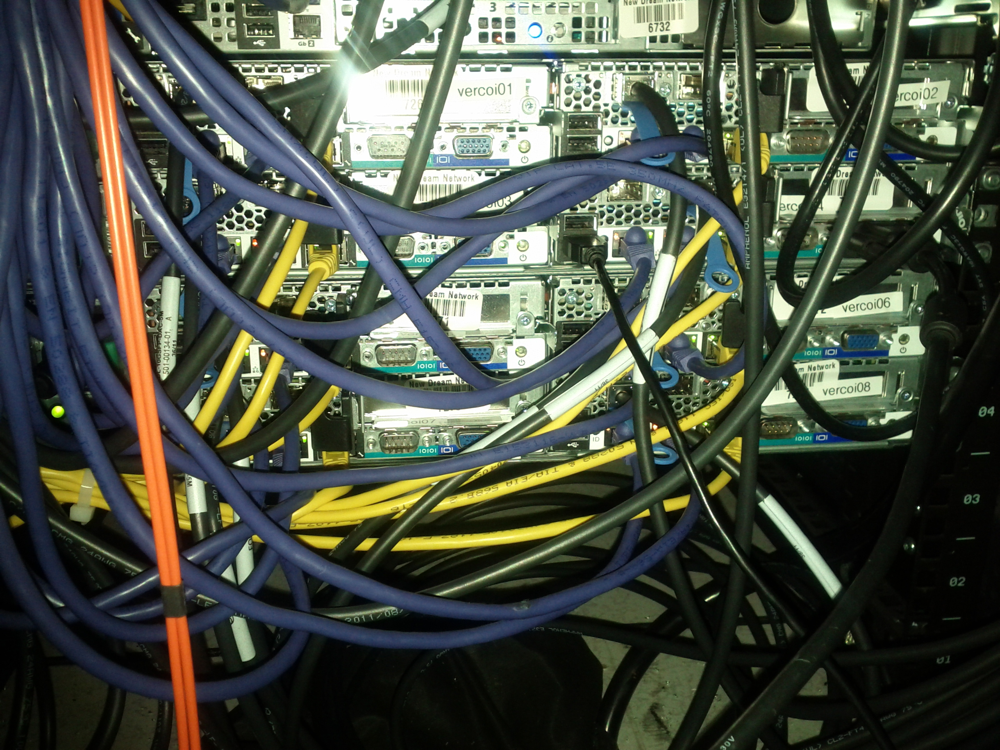

Vercoi¶
- 2u Dell C6100 (2 nodes/chassis)
- 12 core/24 thread
- 72G RAM
- 4x500GB RAID
- VM hosts

Front of a vercoi server.
Note
Mapping of hard drives to vercoiNN was done via documentation, not verified.
| chassis | 1: vercoi02 | 2: vercoi04 | 3: vercoi01 | 4: vercoi03 |
| chassis | 1: vercoi06 | 2: vercoi08 | 3: vercoi05 | 4: vercoi07 |
| HDD 0: 500GB | HDD 1: 500GB | HDD 2: 500GB | HDD 3: 500GB | HDD 4: unused | HDD 5: unused |

{kind=link}
Back of a vercoi server.
| chassis | 3: vercoi01 | 1: vercoi02 |
| 4: vercoi03 | 2: vercoi04 | |
| chassis | 3: vercoi05 | 1: vercoi06 |
| 4: vercoi07 | 2: vercoi08 |
| PCI: NIC, 10g1 (back), 10g2 (unused) | PCI? unused | ||||
| 2xUSB | NIC 1g (?) | NIC 1g (?) | DRAC ethernet | Serial | VGA |
Networking inside the Linux host:
![digraph "vercoi-interfaces" {
edge [arrowhead=none];
node [shape=record];
subgraph cluster_phys {
style=invis;
subgraph cluster_phys_1g {
nic_1g1 [label="1g1"];
nic_1g2 [label="1g2"];
}
subgraph cluster_phys_10g {
nic_10g1 [label="10g1"];
nic_10g2 [label="10g2"];
}
{
// enforce layout order
edge [style=invis, minlen=0];
nic_1g1 -> nic_1g2;
nic_10g1 -> nic_10g2;
}
}
subgraph cluster_vlan {
style=invis;
vlan_back [label="vlan-back"];
vlan_ipmi [label="vlan-ipmi"];
vlan_pub [label="vlan-pub"];
}
subgraph cluster_bridge {
style=invis;
br_front [label="br-front"];
br_back [label="br-back"];
br_ipmi [label="br-ipmi"];
br_pub [label="br-pub"];
}
nic_1g1 -> br_front;
nic_10g2 -> {
vlan_back;
vlan_ipmi;
vlan_pub;
}
vlan_back -> br_back;
vlan_ipmi -> br_ipmi;
vlan_pub -> br_pub;
vms [label="VMs"];
{
br_front;
br_back;
br_ipmi;
br_pub;
} -> vms [arrowhead=crow];
}](../../_images/graphviz-e1bea12e70f585e5fc79c7cfe5c4c40a9e708e13.svg)